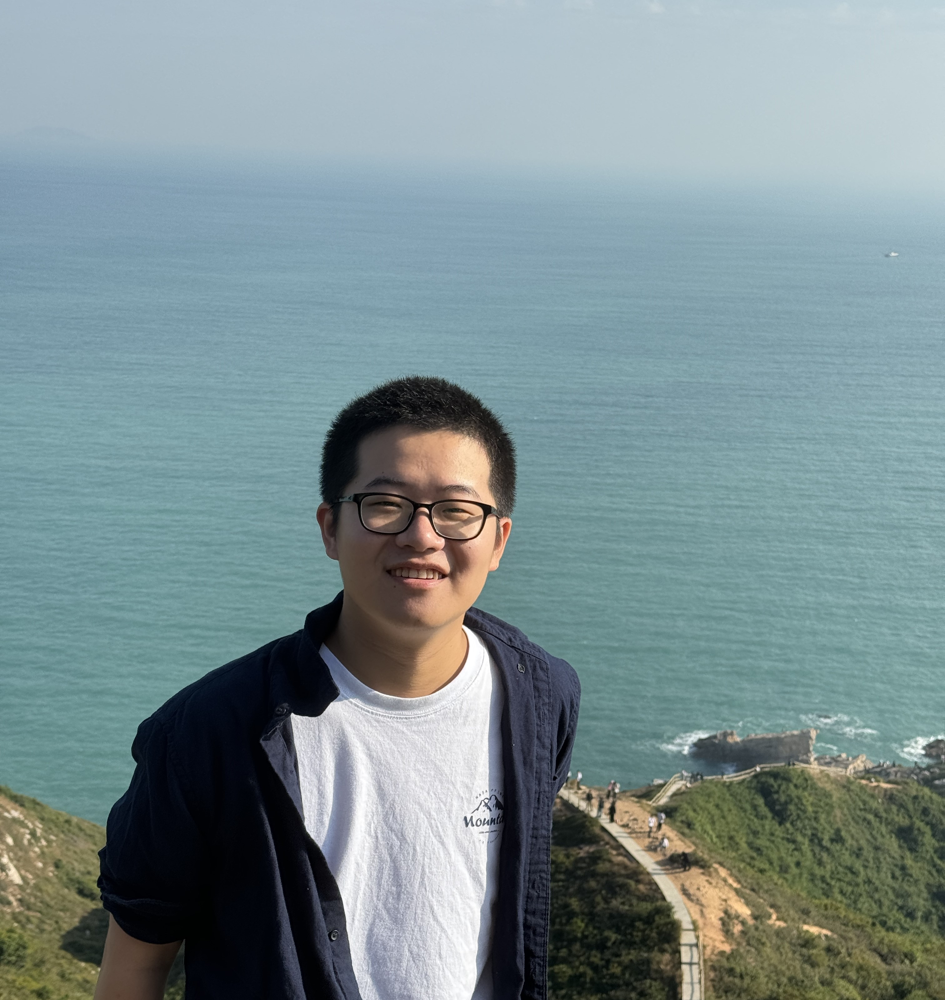
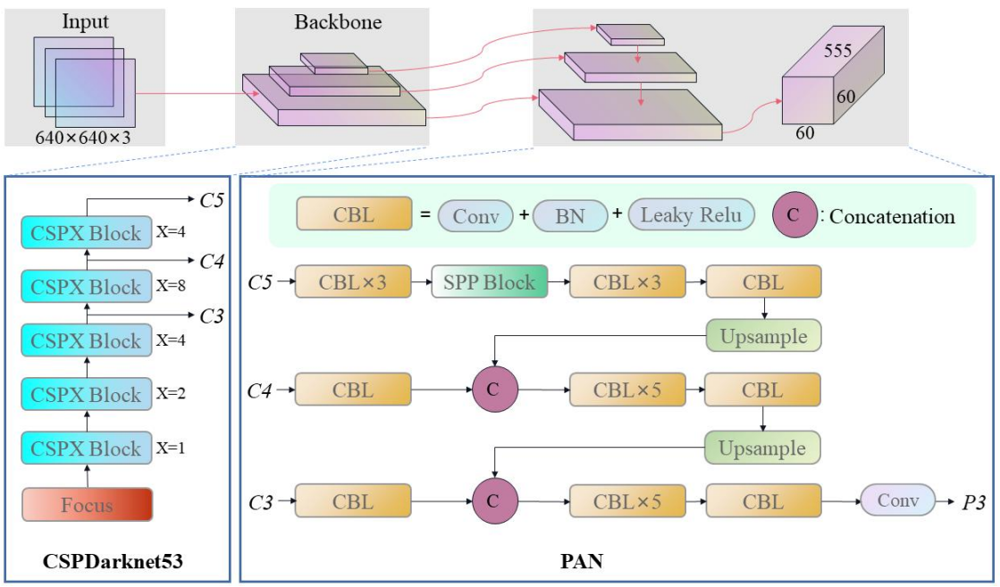
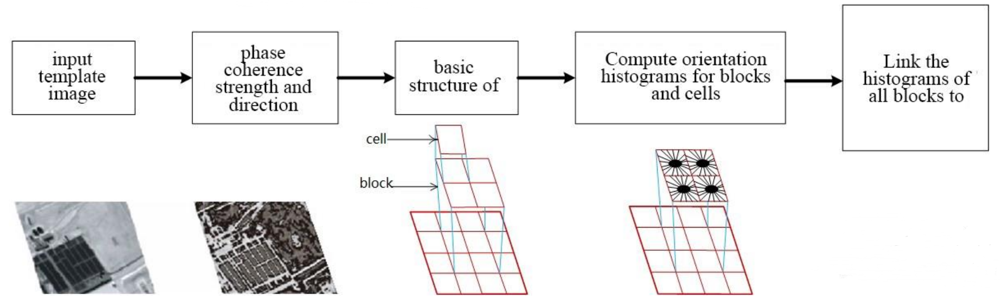
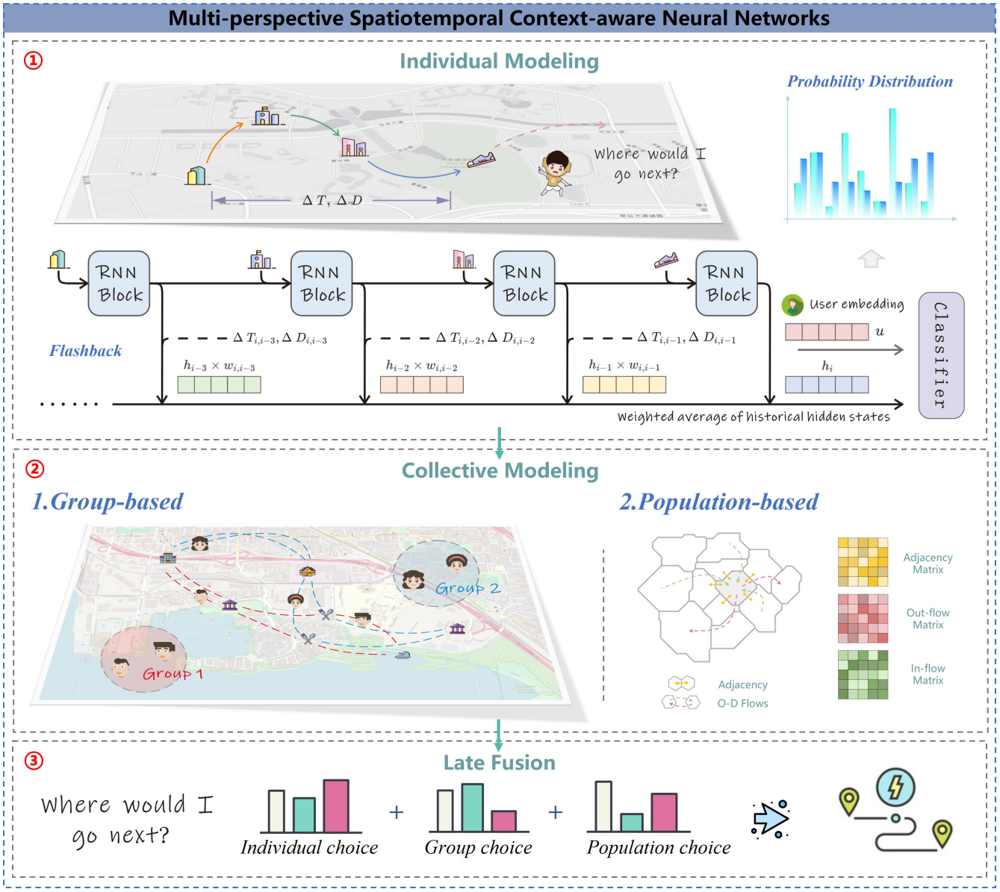
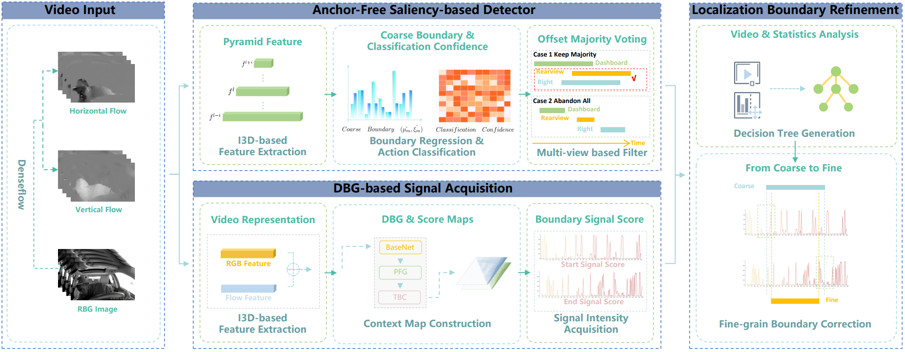
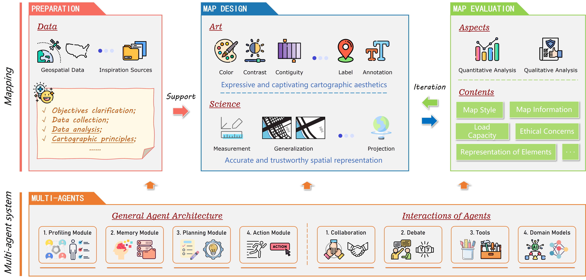
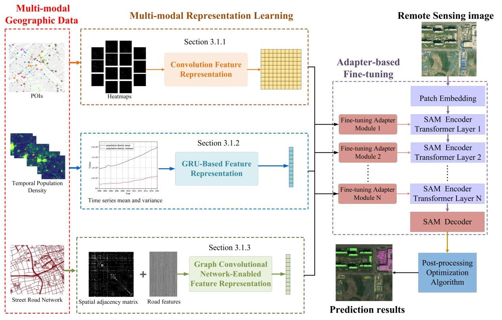
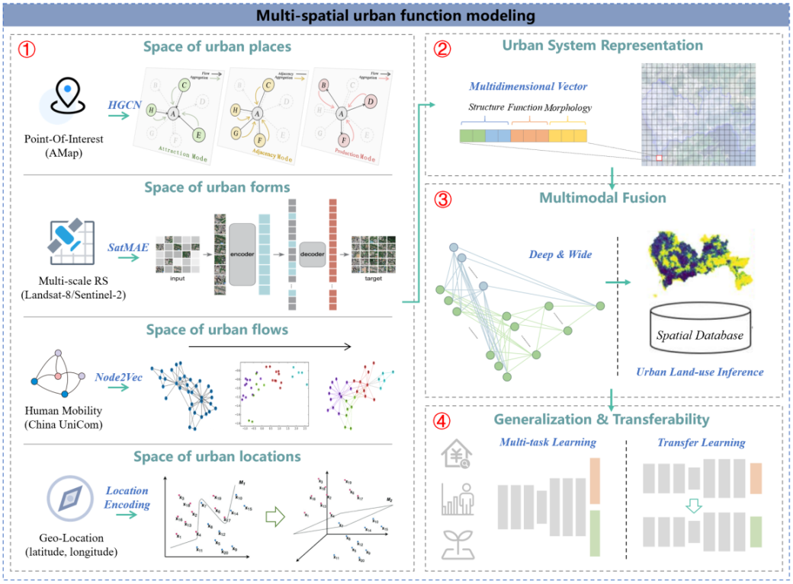
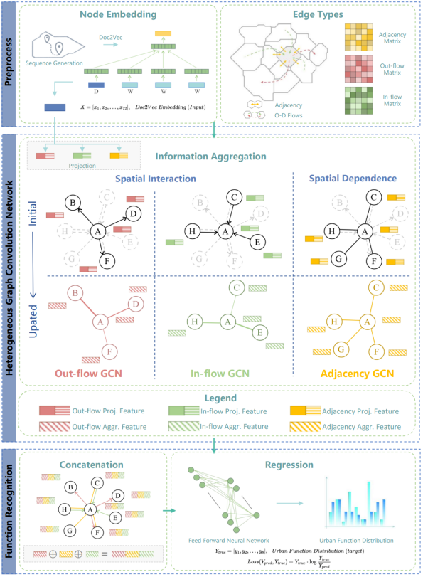

|  | Chenglong Wang ( 王成龙 ) |
About Me
Hi! I am currently a master student in School of Urban Planning and Design, Peking University, under the guidance of Prof. Zhaoya Gong. Prior to this, I received my B.S. degree from Wuhan University and conducted research at Joint RS-CS Lab. for Intelligent Information Processing (advised by Prof. Zhenzhong Chen) and Urbanisation Research Group (advised by Prof. Mengjun Kang). Additionally, I am fortunate to have my internship at Social Computing Group, Microsoft Research Asia (advised by Prof. Fangzhao Wu, Prof. Xing Xie) and Foundamental Vision Group, SenseTime Research (advised by Prof. Lewei Lu). I am happy to collaborate closely with Prof. Yuhao Kang. My research interests include Geospatial Artificial Intelligence (GeoAI), Urban Computing, Cartography, Computer Vision and Responsible AI.Education
- Sep. 2023 - Jun. 2026 (expected) M.S. in Geography (Smart City & Big Data) at School of Urban Planning and Design, Peking University.
- Sep. 2019 - Jun. 2023 B.S. in Geographic Information Science at School of Resource and Environmental Sciences, Wuhan University.
Experience
- Jul. 2024 (expected) AI Research Intern, Social Computing Group, Microsoft Research Asia.
- Sep. 2022 - Jun. 2026 (expected) Team Member, SUPD-GeoAI Lab, Peking University.
- May 2022 - Sep. 2022 AI Research Intern, Foundamental Vision Group, SenseTime Research.
- Jan. 2022 - Sep. 2022 Undergraduate Research Intern, Joint RS-CS Lab. for Intelligent Information Processing, Wuhan University.
- Jan. 2021 - Dec. 2021 Undergraduate Research Intern, Urbanisation Research Group, Wuhan University.
Publications
Peer-reviewed Journal Articles (*co-first author, #corresponding author):
|  |
1. Synthesis and Detection Algorithms for Oblique Stripe Noise of Space-borne Remote Sensing Images
|
|
2. TransMI: a Transfer-learning method for generalized Map Information evaluation
|
|
|  |
3. An Improved Image Registration Algorithm for Thermal Infrared and Panchromatic Image Based on Geometric Structural Properties
|
Peer-reviewed Conference Papers (*co-first author, #corresponding author):
|  |
1. Multi-perspective Spatiotemporal Context-aware Neural Networks for Human Mobility Prediction
|
|  |
2. A Coarse-to-Fine Boundary Localization method for Naturalistic Driving Action Recognition
|
Submitted Journal Articles (*co-first author, #corresponding author):
|  |
1. CartoAgent: a multi-modal large language model empowered multi-agent mapping framework and its application in map style transfer and evaluation
|
|  |
2. BF-SAM: a multi-modal urban foundation model for building function identification
|
|  |
3. Multi-spatial urban function modeling: A multimodal deep network approach for transfer and multi-task learning
|
|  |
4. Learning spatial interaction representation with Heterogeneous Graph Convolution Networks for urban land-use inference
|
Journal Articles in Preparation:
|
1. The structures and semantics of multi-scale intercity human dynamics: an analysis using poincaré embedding
|
|
2. Intercity human mobility prediction algorithm based on fusion of spatiotemporal representation: MVST-GRU
|
Oral/Poster Presentations
- Oral Presentation (2023): Multi-perspective Spatiotemporal Context-aware Neural Networks for Human Mobility Prediction. In ACM SIGSPATIAL HuMob Challenge, Nov. 13, 2023, Hamburg, Germany. [Slide]
- Oral Presentation (2023): Uncovering the global and local structures of urban networks via Poincare Embedding. In City+2023@Perth, Sep. 8-10, 2023, Perth, Australia. [Slide] [Program] [Proceedings]
- Oral Presentation (2023): Uncovering the global and local structures of urban networks via Poincare Embedding. In International Symposium on Location-Based Big Data and GeoAI, Aug. 12, 2023, Cape Town, South Africa. [Slide] [Program]
- Oral Presentation (2023): TransMI: a Transfer-learning method for generalized Map Information evaluation. In Annual Conference on GIS Theory and Methods, May 20, 2023, Guilin, China. [Slide]
- Thesis Defense (2023): Urban land-use recognition and monitoring based on multi-source heterogeneous spatial big data: a multimodal deep learning framework. In Wuhan University, May 14, 2023, Wuhan, China. [Slide] [Certificate]
- Oral Presentation (2022): A Coarse-to-Fine Boundary Localization method for Naturalistic Driving Action Recognition. In IEEE/CVF Conference on Computer Vision and Pattern Recognition Workshops, Jun. 20, 2022, New Orleans, USA. [Poster] [Slide]
Scholarships
- 2022: Xia Jianbai Outstanding Student Scholarship, Wuhan University. (夏坚白测绘事业创业与科技创新奖, RMB: 6,000) [Certificate]
- 2022: First-class Undergraduate Scholarship, Wuhan University. (RMB: 3,000) [Certificate]
- 2021: Yu Gang & Song Xiao Scholarship, Wuhan University. (武汉大学设奖额度最高奖学金, RMB: 20,000, ~Top-0.1%) [Certificate]
- 2021: First-class Undergraduate Scholarship, Wuhan University. (RMB: 3,000) [Certificate]
- 2020: China National Scholarship, Ministry of Education of the People's Republic of China. (本科生国家奖学金, RMB: 8,000) [Certificate]
- 2020: First-class Undergraduate Scholarship, Wuhan University. (RMB: 3,000) [Certificate]
- 2019: Haibin Scholarship, Municipal Government of Kunshan. (昆山海滨奖学基金英才奖, RMB: 20,000, ~Top-0.1%) [News]
Honors
- 2023: Luojia Role Model, Wuhan University. (榜样珞珈年度人物, 武汉大学本科生最高荣誉, Top-10/~40,000) [Interview] [Ceremony] [Defense]
- 2023: Outstanding Graduate, Wuhan University. (武汉大学本科优秀毕业生) [Certificate]
- 2022: Pacemaker to Merit Student, Wuhan University. (武汉大学三好学生标兵, ~Top-0.1%) [Certificate]
- 2022: Merit Student, Wuhan University. [Certificate]
- 2022: Pacemaker in Learning and Scientific Research, Wuhan University. [News]
- 2022: Finalist in Top 10 Luojia Fengyun Student, Wuhan University. (珞珈风云学子, 武汉大学在校生最高荣誉, ~Top-0.1%) [News]
- 2021: Merit Student, Wuhan University. [Certificate]
- 2021: Social Activist, Wuhan University. [Certificate]
- 2021: Pacemaker in Learning and Scientific Research, Wuhan University. [News]
- 2020: Merit Student, Wuhan University. [Certificate]
- 2020: Excellent Team Leader of Social Practice, Hubei Committee of the Communist Youth League. [Certificate]
- 2020: Advanced Individual in Summer Social Practice, Wuhan University. [Certificate]
Awards
- 2023: Top-10 score, HuMob Challenge, International Conference on Advances in Geographic Information Systems Workshops. [Webpage]
- 2023: Excellent Bachelor's Dissertation in Wuhan University. (武汉大学优秀学士学位论文) [Certificate]
- 2022: Finalist, International Mathematical Contest in Modeling. [Certificate]
- 2022: Top-10 score, AICity Challenge, IEEE/CVF Conference on Computer Vision and Pattern Recognition Workshops. [Webpage]
- 2021: Meritorious Winner, International Mathematical Contest in Modeling. [Certificate]
- 2021: First Prize, KQ Cup GIScience Competition (Software Development). [Certificate]
- 2021: First Prize, SuperMap Cup GIScience Competition (Software Development, Hubei). [Certificate]
- 2021: Second Prize, Challenge Cup Technological Innovation Competition (Hubei). [Certificate]
- 2021: Second Prize, National Mathematical Contest in Modeling (Hubei). [Certificate]
- 2021: Third Prize, SuperMap Cup GIScience Competition (Cartography, Hubei). [Certificate]
- 2020: First Prize, Chinese Mathematics Competition. [Certificate]
- 2020: First Prize, Hubei Mathematics Competition. [Certificate]
- 2020: Second Prize, National English Competition for College Students. [Certificate]
- 2020: Second Prize, Translation and Interpreting Contest (Hubei). [Certificate]
- 2018: First Prize, Mathematical Olympiad (Jiangsu). [Certificate]
- 2018: Second Prize, Chemical Olympiad (Jiangsu). [Certificate]
- 2018: Second Prize, Physics Olympiad (Jiangsu). [Certificate]
- 2018: Third Prize, Biological Olympiad (Jiangsu). [Certificate]
- 2017: Second Prize, Chemical Olympiad (Jiangsu). [Certificate]
Services
- 2024-: Reviewer, Urban Informatics.
- 2024-: Member, GIS-info Group, GISphere (a non-profit organization).
- 2019-2021: Undersecretary - Department of Sci-tech Practice, SRES, Wuhan University.
- 2019-2021: Undersecretary - Young Volunteers Association, SRES, Wuhan University.
Discussions
Topics shared at group meetings or classes, thank the authors of the relevant papers (-:- 2024: CartoAgent: a multi-modal large languge model empowered multi-agent mapping framework. [Slide]
- 2024: CartoAgent: A Multi-modal Foundation Model Empowered Multi-agent Framework for Map-making. [Slide]
- 2023: World-city Network: a New Metageography? [Slide]
- 2023: A spatially explicit multimodal deep learning approach to modeling urban functions. [Slide]
- 2023: Hierarchical destination choice and spatial interaction modelling: a simulation experiment. [Slide]
- 2023: Form Follows Function Linking Morphological and Functional Polycentricity. [Slide]
- 2023: Land-use estimation and change detection using POI embedding. [Slide]
- 2023: Graph meets Large Language Models. [Slide]
- 2023: A Brief Introduction to Large Language Models, Multimodal Large Language Models, and Their Applications in GIS. [Slide]
- 2023: CSP Self-Supervised Contrastive Spatial Pre-Training for Geospatial-Visual Representations. [Slide]
- 2023: On the Opportunities and Challenges of Foundation Models for Geospatial Artificial Intelligence. [Slide]
- 2022: Intelligent Recognition and Understanding of Maps. [Slide]
- 2022: Image-to-Image Translation with GANs and its Application in Geography. [Slide]
- 2022: Clustering by measuring local direction centrality for data with heterogeneous density and weak connectivity. [Slide]
- 2022: Node Embedding & Hyperbolic Space. [Slide]
Page views: